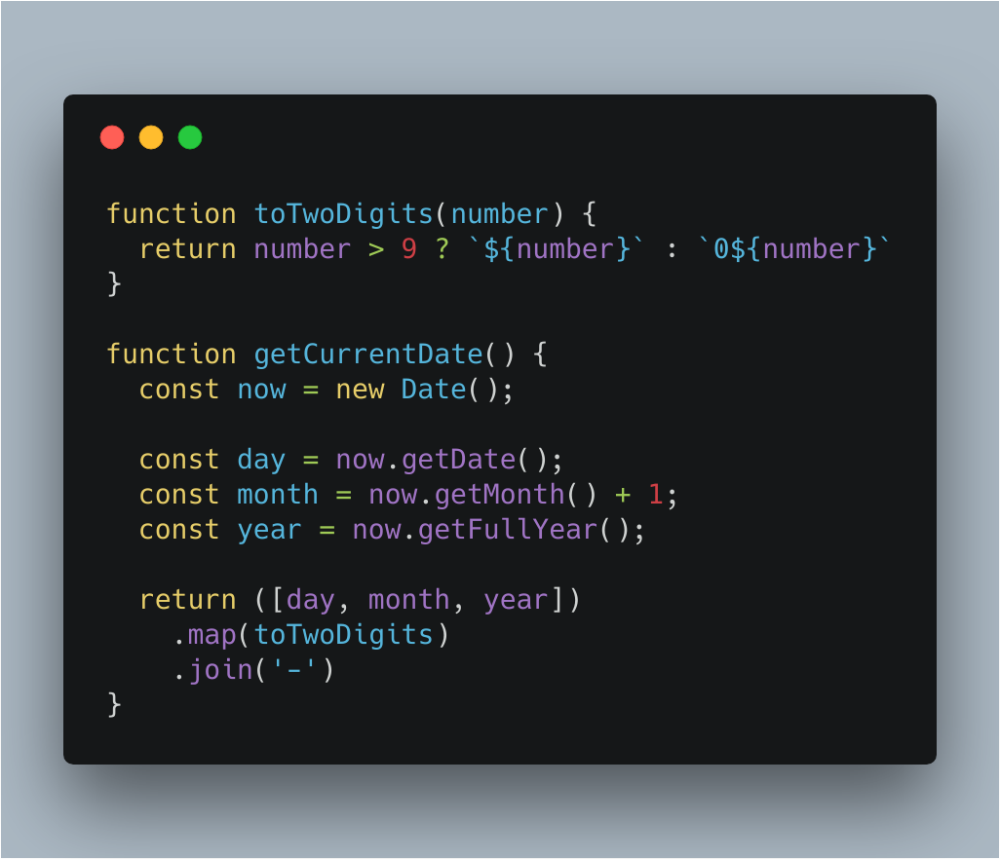

JavaScript
Содержание:
История
События, в результате которых появился JavaScript, разворачивались в течение шести месяцев, с мая по декабрь 1995 года. Компания Netscape Communications уверенно прокладывала себе путь в области веб-технологий. Её браузер Netscape Communicator успешно отвоевывал позиции у NCSA Mosaic, первого популярного веб-браузера. Netscape была создана людьми, принимавшими участие в разработке Mosaic в ранние 90-е. Теперь, с деньгами и независимостью, у них было всё необходимое для поиска способов дальнейшего развития веб-технологий. Именно это послужило толчком для рождения JavaScript.
Основатель Netscape Communications и бывший участник команды Mosaic Марк Андриссен

Самая первая реализация JavaScript была создана Бренданом Эйхом (англ. Brendan Eich) в компании Netscape, и с тех пор обновляется, чтобы соответствовать ECMA-262 Edition 5 и более поздним версиям. Этот движок называется SpiderMonkey и реализован на языке C/C++. Движок Rhino создан Норрисом Бойдом (англ. Norris Boyd) и реализован на языке Java. Как и SpiderMonkey, Rhino соответствует ECMA-262 Edition 5. JavaScript ("JS" для краткости) — это полноценный динамический язык программирования, который применяется к HTML документу, и может обеспечить динамическую интерактивность на веб-сайтах. Его разработал Brendan Eich, сооснователь проекта Mozilla, Mozilla Foundation и Mozilla Corporation.
Краткий обзор

JavaScript невероятно универсален и дружелюбен к новичкам. Обладая большим опытом, вы сможете создавать игры, анимированную 2D и 3D графику, полномасштабные приложения с базами данных и многое другое!
JavaScript сам по себе довольно компактный, но очень гибкий. Разработчиками написано большое количество инструментов поверх основного языка JavaScript, которые разблокируют огромное количество дополнительных функций с очень небольшим усилием.
К ним относятся: Программные интерфейсы приложения (API)(, встроенные в браузеры, обеспечивающие различные функциональные возможности, такие как динамическое создание HTML и установку CSS стилей, захват и манипуляция видеопотоком, работа с веб-камерой пользователя или генерация 3D графики и аудио сэмплов. Сторонние API позволяют разработчикам внедрять функциональность в свои сайты от других разработчиков, таких как Twitter или Facebook .Также вы можете применить к вашему HTML сторонние фреймворки и библиотеки, что позволит вам ускорить создание сайтов и приложений.
Освоение языка
При выборе профессии web-программиста без Javascript не обойтись. Понадобятся также знания по HTML и CSS, эти инструменты обычно работают в связке. Быстрому освоению языка способствуют:
- несложность синтаксиса и рациональность, интуитивная понятность кода;
- простота и доступность инструментов (минимум: текстовый редактор и браузер);
- наличие в интернете большого количества материалов для учёбы и практики.
Пример кода:

Вот часть кода с картинки:
fuction toTwoDigits ( number ) {
return number> 9 ? '$ { : '0${ number }'}
fuction getCurrentDate () {const now =new Date ();
Востребованность, сферы применения
Неизменно высокий интерес к Javascript подтверждают специальные международные рейтинги. Эти индексы представляют собой аналитические данные, в основе которых:
- запросы по языкам программирования в поисковых системах;
- вопросы на профессиональных форумах;
- проекты, реализованные с использованием тех или иных технологий;
- вакансии для программистов от крупнейших рекрутинговых агентств.
| Название | Используемый движок JavaScript | Языки, на которых написан движок и платформа | Лицензия |
|---|---|---|---|
| Jaxer | SpiderMonkey | C++, C | GPL 3 |
| persevere-framework | Rhino | Java | Модифицированная лицензия BSD |
| Helma | Rhino | Java, JavaScript | BSD-подобная Helma License 2.0 |
| v8cgi | V8 | C++, JavaScript | Лицензия BSD[ |
| gopherjs | Go | Go | Лицензия BSD |
| v8cgi | V8 | C++, JavaScript | Лицензия BSD[ |